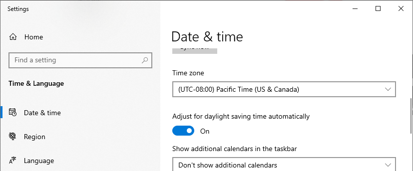

Adjusting the System Date and Time
This topic includes information about how to adjust the system date and time.
Warning: To prevent database issues, you must never adjust the system date and time while the system is processing samples.
- In the Windows Taskbar type date and select Date & time settings to open the Date & time settings page in system settings.
- Select Off for Set time automatically.
- Select Off for Adjust for daylight saving time automatically.
- Set the time based on your location.

- Under Set the date and time manually, select Change to open the Change date and time window.
- Set the
Date and
Time.
Important: You must set the date and time to the local date and time where the instrument has been installed.
- Select Change.